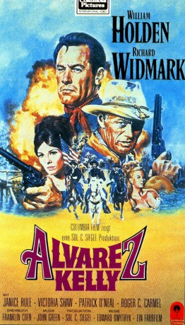
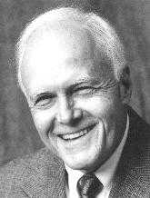

#3321 Alvarez Kelly
 
 IMDB-Wertung: 6.4 / 10
IMDB-Wertung: 6.4 / 10  Metascore: 0
Metascore: 0 
Der amerikanische Bürgerkrieg ist für Alvarez Kelly nur solange interessant, wie er daran verdienen kann. Mehr als 2000 Rinder bringt er mit ein paar Helfern bis nach Virginia zu den Unionstruppen. Sein Gewinn: 40.000 Dollar. Doppelt soviel Geld und die Liebe einer schönen Frau bieten die Konföderierten. Ein verlockendes Angebot für Alvarez Kelly, aber keine leichte Aufgabe. Denn er soll den Yankees die schwerbewachte Herde wieder stehlen. Colonel Rossiter (Richard Widmark) führte den Raubzug an. Mit Kellys Hilfe treiben sie die Rinder weg – aber genau in einen Hinterhalt, den die Unionstruppen ihnen gestellt haben.
Jahr: 1966
Dauer: 105 Minuten
FSK: 12
Land: USA Studio: Columbia PicturesTonspuren:
Untertitel:
Auflösung: 1080p (1920x816) Größe: 4536 MB
Genre: Western
Regisseur:  Edward Dmytryk
Edward Dmytryk
Drehbuch: Franklin Coen, Elliott Arnold, Daniel Taradash
Soundtrack: Johnny Green
Darsteller:
 William Holden als Alvarez Kelly
William Holden als Alvarez Kelly Richard Widmark als Col. Tom Rossiter
Richard Widmark als Col. Tom Rossiter- Janice Rule als Liz Pickering
 Patrick O'Neal als Major Albert Stedman
Patrick O'Neal als Major Albert Stedman Roger C. Carmel als Capt. Angus Ferguson
Roger C. Carmel als Capt. Angus Ferguson- Arthur Franz als Capt. Towers
 Don 'Red' Barry als Lt. Farrow
Don 'Red' Barry als Lt. Farrow Harry Carey Jr. als Cpl. Peterson
Harry Carey Jr. als Cpl. Peterson- Howard Caine als McIntyre
- Paul Lukather als Capt. Webster
 Scatman Crothers als Bellhop , uncredited
Scatman Crothers als Bellhop , uncredited-  Jerry Leggio als Telegrapher , uncredited
- Mantan Moreland als Bartender , uncredited
- Grant Woods als Captain Freeman , uncredited
- Victoria Shaw als Charity Warwick
- Richard Rust als Sergeant Hatcher
- Duke Hobbie als John Beaurider
- Mauritz Hugo als Ely Harrison
- Barry Atwater als General Kautz
- Robert Morgan als Capt. Williams
- Stephanie Hill als Mary Ann
- Indus Arthur als Melinda
 Clint Ritchie als Union Lt.
Clint Ritchie als Union Lt.- Ivan Browning als Waiter , uncredited
- Pepe Callahan als Pancho , uncredited
- Arlene Charles als Bordello Girl , uncredited
- Roberto Contreras als Sanchez , uncredited
- Boone Dugas als Extra , uncredited
- Barbara Eaton als Bordello Girl , uncredited
- Jacqueline Fontaine als Bordello Girl , uncredited
- Anthony Ghazlo Sr. als Waiter , uncredited
- Peter Goff als Union Sentry , uncredited
- Sonya Harrison als Ellie , uncredited
- Patrick Hawley als Confederate Officer , uncredited
- Bill Holliday als Union Lt. Cox , uncredited
- Walter Maslow als Confederate Officer , uncredited
- John McKee als Finley , uncredited
- Sally Nichols als Bordello Girl , uncredited
- Joyce Perry als Bordello Girl , uncredited
- Pedro Regas als Mexican Manservant , uncredited
- Sherry Staiger als Geraldine - the Madame , uncredited
- Frank Sully als Prisoner , uncredited
- Hal Taggart als Desk Clerk , uncredited
- Jan Watson als Bordello Girl , uncredited
 Guy Wilkerson als Jailer , uncredited
Guy Wilkerson als Jailer , uncredited- James Wood als Union Officer , uncredited
Datei: X:\HD-Western-1960-1979\Alvarez Kelly (1966, FSK12, 1920x816).mkv seit 11.03.2016
Festplatte: HD Eastern+Western
 Es gibt insgesamt 110 Filme in der Gruppe 'HD-Western-1960-1979'
Es gibt insgesamt 110 Filme in der Gruppe 'HD-Western-1960-1979'